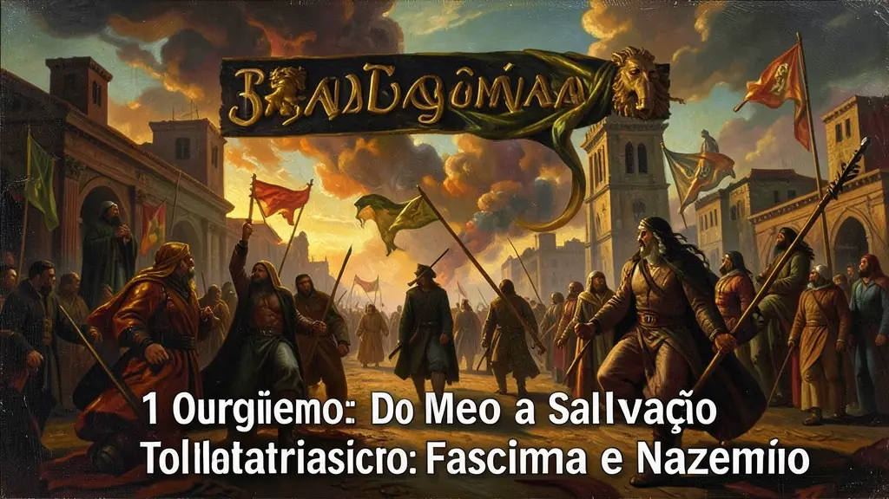
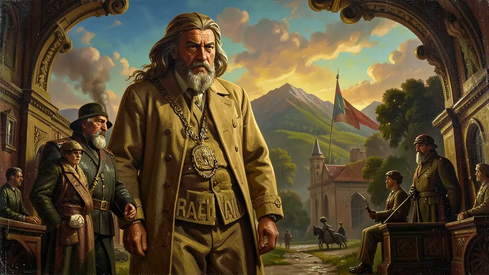
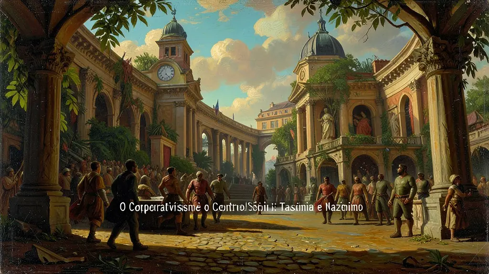

Capítulo 01
1. O Surgimento: Do Medo à Salvação
Após a I Guerra, a Europa estava em ruínas. A classe média temia uma revolução socialista (como a ocorrida na Rússia em 1917) e os operários estavam famintos. Mussolini e Hitler prometeram ordem, emprego e o retorno ao orgulho nacional. Eles pegaram os símbolos de glória dos impérios passados (Roma e Sacro Império) para convencer as massas de que o futuro seria grandioso sob o comando de um 'homem providencial'.

Capítulo 02
2. Doutrinação e Propaganda: O Estado Educador
A escola e a juventude (como a Juventude Hitlerista) foram transformadas em campos de treinamento militar e ideológico. A propaganda não era apenas informativa, era emocional e onipresente. Rádios e jornais repetiam as mesmas mentiras até serem aceitas como verdades. O objetivo era criar um 'Novo Homem', que não questionasse e que sacrificasse sua vida pela vontade do Estado.

Capítulo 03
3. O Corporativismo e o Controle Social
No fascismo italiano, o corporativismo substituiu os sindicatos livres por órgãos controlados pelo governo. Patrões e empregados deveriam cooperar em nome da produção nacional e da guerra. Greves e qualquer tipo de conflito de classe foram proibidos, garantindo o lucro das burguesias industriais que financiaram a subida de Mussolini ao poder.

Capítulo 04
4. O Antissemitismo e o Holocausto
No caso alemão, o estado nazista institucionalizou o ódio. As Leis de Nuremberg (1935) retiraram a cidadania dos judeus, proibindo casamentos e empregos públicos. O ódio culminou na 'Solução Final', o extermínio planejado em escala industrial de milhões de pessoas em campos de concentração. Foi a primeira vez que a tecnologia industrial foi usada sistematicamente para o genocídio humano.
Capítulo 05
5. O Pós-Guerra e o Legado Autoritário
A derrota do Eixo em 1945 não acabou com as ideias fascistas. Regimes autoritários continuaram na Espanha (Franco) e em Portugal (Salazar). O Brasil de Vargas no Estado Novo também foi profundamente influenciado pela estética e métodos do fascismo. Estudar o totalitarismo é fundamental para reconhecer os sinais de ameaça à democracia nos dias de hoje, como o discurso de ódio e o desprezo pelas instituições.
O totalitarismo, fenômeno político típico do século XX, não deve ser confundido com meras ditaduras autoritárias tradicionais. Segundo Hannah Arendt, o regime totalitário busca o controle absoluto não apenas da esfera pública e política, mas também da vida privada e da própria mente dos cidadãos. Através do uso massivo da propaganda (culto ao líder) e do terror institucionalizado (polícia política e campos de concentração), esses regimes visam aniquilar a autonomia humana e transformar a sociedade em uma massa homogênea e obediente.
As origens do totalitarismo — seja na vertente nazifascista ou na stalinista — residem no colapso das estruturas sociais tradicionais após a Primeira Guerra Mundial e no surgimento de movimentos de massa que ofereciam soluções simplistas para crises complexas. A ideologia totalitária substitui a realidade por uma narrativa ficcional de 'pureza racial' ou 'inevitabilidade histórica', exigindo lealdade incondicional ao partido único. Nesses sistemas, a verdade deixa de ser um fato para tornar-se qualquer coisa que sirva aos interesses do líder supremo.
Para o Enem, o estudo do totalitarismo é essencial para compreender as tragédias do século XX, como o Holocausto e os expurgos soviéticos. É necessário analisar como o desespero econômico (crise de 1929) e o sentimento de humilhação nacional serviram de combustível para essas ideologias. A frase clássica de Arendt, 'a banalidade do mal', resume como indivíduos comuns podem cometer atrocidades indescritíveis quando inseridos em um sistema que remove a responsabilidade pessoal e a capacidade de julgamento moral através do funcionamento burocrático e ideológico.
Fonte: ARENDT, Hannah. Origens do Totalitarismo. São Paulo: Companhia das Letras, 1989.
Atividades interativas
Questões para fixar
Os regimes totalitários do século XX, apesar de suas diferenças geográficas, possuíam características comuns. Qual das alternativas abaixo apresenta uma dessas características?
Na Alemanha Nazista, o antissemitismo foi transformado em lei através das 'Leis de Nuremberg'. O objetivo principal dessas leis era: